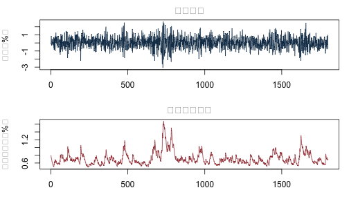
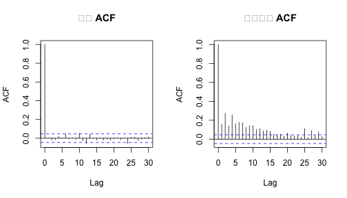
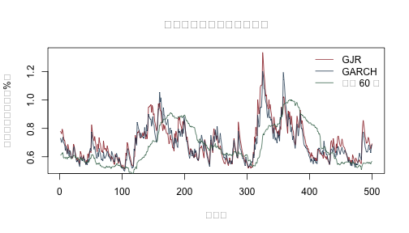

《財務時間序列分析》線上附錄
R08：ARCH、GARCH、非對稱波動與預測
本附錄對應第 11--12 章。所有資料均由固定亂數種子模擬，不安裝套件、不下載即時資料，也不更改工作目錄。模擬只用來驗證程式、符號與有限樣本行為，不構成理論證明。
knitr::opts_chunk$set(
echo = TRUE, message = FALSE, warning = FALSE,
fig.width = 7, fig.height = 4
)
required_r <- "4.3.0"
stopifnot(getRversion() >= required_r)
set.seed(808)
1. 軟體與重現規格#
本檔只使用 R 內建的 stats、graphics 與 utils。主要函數是
optim()、lm()、acf()、Box.test()。結果應記錄 R 版本與亂數種子；不同 R 版本的最佳化器可能在最後幾位略有差異。
data.frame(
component = c("R", "stats", "graphics"),
version = c(
R.version.string,
as.character(packageVersion("stats")),
as.character(packageVersion("graphics"))
)
)
## component version
## 1 R R version 4.5.2 (2025-10-31)
## 2 stats 4.5.2
## 3 graphics 4.5.2
2. 模擬 GJR--GARCH#
本附錄固定使用
\[ h_t=\omega+\alpha a_{t-1}^2+ \gamma\mathbf 1(a_{t-1}<0)a_{t-1}^2+\beta h_{t-1}. \]
因此同幅度負面衝擊的係數是 \(\alpha+\gamma\)。在對稱標準常態新衝擊下，二階持續性為 \(\alpha+\beta+\gamma/2\)。
simulate_gjr <- function(n, omega, alpha, beta, gamma = 0,
burn = 500, seed = 808) {
persistence <- alpha + beta + gamma / 2
stopifnot(
n > 20, burn >= 0, omega > 0,
alpha >= 0, beta >= 0, alpha + gamma >= 0,
persistence < 1
)
set.seed(seed)
total <- n + burn
z <- rnorm(total)
a <- numeric(total)
h <- numeric(total)
h[1] <- omega / (1 - persistence)
a[1] <- sqrt(h[1]) * z[1]
for (t in 2:total) {
negative <- as.numeric(a[t - 1] < 0)
h[t] <- omega +
alpha * a[t - 1]^2 +
gamma * negative * a[t - 1]^2 +
beta * h[t - 1]
a[t] <- sqrt(h[t]) * z[t]
}
keep <- (burn + 1):total
data.frame(
time = seq_len(n),
a = a[keep],
h = h[keep],
z = z[keep]
)
}
truth <- c(omega = 2e-6, alpha = 0.05, beta = 0.88, gamma = 0.08)
sim <- simulate_gjr(
n = 1800,
omega = truth["omega"],
alpha = truth["alpha"],
beta = truth["beta"],
gamma = truth["gamma"]
)
truth_persistence <- with(
as.list(truth),
alpha + beta + gamma / 2
)
truth_persistence
## [1] 0.97
old_par <- par(mfrow = c(2, 1), mar = c(3, 4, 2, 1))
plot(sim$time, 100 * sim$a, type = "l", col = "#173B57",
xlab = "時間", ylab = "報酬（%）",
main = "模擬報酬")
plot(sim$time, 100 * sqrt(sim$h), type = "l", col = "#A34045",
xlab = "時間", ylab = "條件標準差（%）",
main = "真實條件波動")

par(old_par)
報酬方向可以幾乎不相關，平方報酬仍有明顯記憶。
old_par <- par(mfrow = c(1, 2))
acf(sim$a, lag.max = 30, main = "報酬 ACF")
acf(sim$a^2, lag.max = 30, main = "平方報酬 ACF")

par(old_par)
3. ARCH--LM 輔助迴歸#
這裡模擬平均數為零，所以直接使用 a。實際資料應先配適平均數方程，再把平均數殘差送入檢定。
arch_lm <- function(residual, lags = 10) {
stopifnot(lags >= 1, length(residual) > 5 * lags)
x2 <- residual^2
n <- length(x2)
y <- x2[(lags + 1):n]
X <- sapply(seq_len(lags), function(j) {
x2[(lags + 1 - j):(n - j)]
})
colnames(X) <- paste0("lag", seq_len(lags))
fit <- lm(y ~ X)
statistic <- nobs(fit) * summary(fit)$r.squared
data.frame(
lags = lags,
statistic = statistic,
p_value = pchisq(statistic, df = lags, lower.tail = FALSE)
)
}
arch_lm(sim$a, lags = 10)
## lags statistic p_value
## 1 10 249.865 5.794492e-48
4. 手動常態準最大概似#
4.1 參數轉換#
直接最佳化 \((\omega,\alpha,\beta,\gamma)\) 容易跑到負變異數或非定態區。本例以指數確保 \(\omega>0\)，並以類似 softmax 的轉換確保：
- GARCH：\(\alpha+\beta<0.999\)；
- GJR：\(\alpha+\beta+\gamma/2<0.999\)。
map_garch <- function(eta) {
raw <- exp(eta[2:3])
denom <- 1 + sum(raw)
c(
omega = exp(eta[1]),
alpha = 0.999 * raw[1] / denom,
beta = 0.999 * raw[2] / denom,
gamma = 0
)
}
map_gjr <- function(eta) {
raw <- exp(eta[2:4])
denom <- 1 + sum(raw)
c(
omega = exp(eta[1]),
alpha = 0.999 * raw[1] / denom,
beta = 0.999 * raw[2] / denom,
gamma = 2 * 0.999 * raw[3] / denom
)
}
filter_variance <- function(a, par) {
n <- length(a)
h <- numeric(n)
h[1] <- var(a)
for (t in 2:n) {
negative <- as.numeric(a[t - 1] < 0)
h[t] <- par["omega"] +
par["alpha"] * a[t - 1]^2 +
par["gamma"] * negative * a[t - 1]^2 +
par["beta"] * h[t - 1]
}
h
}
gaussian_nll <- function(eta, a, model = c("garch", "gjr")) {
model <- match.arg(model)
par <- if (model == "garch") map_garch(eta) else map_gjr(eta)
h <- filter_variance(a, par)
if (any(!is.finite(h)) || any(h <= 0)) return(1e100)
0.5 * sum(log(2 * pi) + log(h[-1]) + a[-1]^2 / h[-1])
}
4.2 鎖定訓練期#
最後 500 期保留作測試；任何參數、初始尺度與模型比較都不能使用這 500 期。
train_end <- 1300
train <- sim$a[seq_len(train_end)]
test <- sim$a[(train_end + 1):nrow(sim)]
garch_start <- c(
log(var(train) * 0.05),
log(0.08 / (0.999 - 0.93)),
log(0.85 / (0.999 - 0.93))
)
gjr_start <- c(
log(var(train) * 0.03),
log(0.05 / (0.999 - 0.97)),
log(0.88 / (0.999 - 0.97)),
log(0.04 / (0.999 - 0.97))
)
fit_garch <- optim(
garch_start, gaussian_nll, a = train, model = "garch",
method = "BFGS", control = list(maxit = 1500)
)
fit_gjr <- optim(
gjr_start, gaussian_nll, a = train, model = "gjr",
method = "BFGS", control = list(maxit = 2000)
)
stopifnot(fit_garch$convergence == 0, fit_gjr$convergence == 0)
par_garch <- map_garch(fit_garch$par)
par_gjr <- map_gjr(fit_gjr$par)
rbind(
truth = truth,
GARCH = par_garch,
GJR = par_gjr
)
## omega alpha beta gamma
## truth 2.000000e-06 0.05000000 0.8800000 0.08000000
## GARCH 3.239830e-06 0.10553700 0.8303668 0.00000000
## GJR 2.724313e-06 0.05161365 0.8528328 0.09608839
有限樣本估計不必精確等於真值；GARCH 遺漏不對稱後，其他參數也可能吸收部分效果。
4.3 標準化殘差診斷#
h_train_gjr <- filter_variance(train, par_gjr)
z_train_gjr <- train / sqrt(h_train_gjr)
rbind(
standardized = unlist(Box.test(
z_train_gjr, lag = 20, type = "Ljung-Box"
)[c("statistic", "p.value")]),
squared_standardized = unlist(Box.test(
z_train_gjr^2, lag = 20, type = "Ljung-Box"
)[c("statistic", "p.value")])
)
## statistic.X-squared p.value
## standardized 20.27926 0.4405871
## squared_standardized 15.68202 0.7361450
Ljung--Box 結果是診斷線索，不是模型正確的證明。還應檢查尾部、符號不對稱與參數邊界。
5. GJR 負面衝擊方向的單元式檢查#
令正負衝擊幅度皆為 2%，保持前一期 \(h\) 相同。若 gamma > 0，負面衝擊的下一期變異數必須較大。
one_step_h <- function(previous_a, previous_h, par) {
par["omega"] +
par["alpha"] * previous_a^2 +
par["gamma"] * as.numeric(previous_a < 0) * previous_a^2 +
par["beta"] * previous_h
}
h_reference <- var(train)
sign_check <- data.frame(
shock = c("positive", "negative"),
a_previous = c(0.02, -0.02)
)
sign_check$h_next <- vapply(
sign_check$a_previous,
one_step_h,
numeric(1),
previous_h = h_reference,
par = par_gjr
)
sign_check
## shock a_previous h_next
## 1 positive 0.02 6.704031e-05
## 2 negative -0.02 1.054757e-04
stopifnot(
sign_check$h_next[sign_check$shock == "negative"] >
sign_check$h_next[sign_check$shock == "positive"]
)
這個 stopifnot() 是重要防線：若把指示函數誤寫成 a > 0，文件會在執行時失敗。
6. 無資料洩漏的一步波動預測#
參數固定在訓練期估計值。測試期每一步先用上一期已知報酬產生預測，等本期報酬實現後才更新遞迴。
forecast_locked <- function(train, test, par) {
h_train <- filter_variance(train, par)
previous_a <- tail(train, 1)
previous_h <- tail(h_train, 1)
forecast <- numeric(length(test))
for (j in seq_along(test)) {
forecast[j] <- one_step_h(previous_a, previous_h, par)
# test[j] 在 forecast[j] 形成後才進入下一期狀態。
previous_a <- test[j]
previous_h <- forecast[j]
}
forecast
}
hhat_garch <- forecast_locked(train, test, par_garch)
hhat_gjr <- forecast_locked(train, test, par_gjr)
# 60 期歷史變異數基準；每一期只使用它以前的觀察。
all_a <- c(train, test)
hhat_hist <- numeric(length(test))
for (j in seq_along(test)) {
t_index <- train_end + j
past_index <- (t_index - 60):(t_index - 1)
hhat_hist[j] <- var(all_a[past_index])
}
stopifnot(
all(hhat_garch > 0),
all(hhat_gjr > 0),
all(hhat_hist > 0)
)
6.1 QLIKE 與平方損失#
qlike <- function(realized_square, variance_forecast) {
log(variance_forecast) + realized_square / variance_forecast
}
loss_table <- rbind(
Historical60 = c(
QLIKE = mean(qlike(test^2, hhat_hist)),
SquaredLoss = mean((test^2 - hhat_hist)^2)
),
GARCH = c(
QLIKE = mean(qlike(test^2, hhat_garch)),
SquaredLoss = mean((test^2 - hhat_garch)^2)
),
GJR = c(
QLIKE = mean(qlike(test^2, hhat_gjr)),
SquaredLoss = mean((test^2 - hhat_gjr)^2)
)
)
loss_table
## QLIKE SquaredLoss
## Historical60 -8.970089 4.504735e-09
## GARCH -9.026728 4.165587e-09
## GJR -9.023314 4.166342e-09
test^2 只是不可觀察條件變異數的高雜訊代理。若有由高頻資料建構且授權清楚的實現波動，可另行替換，但評估時間邊界不變。
plot(
seq_along(test), 100 * sqrt(hhat_gjr), type = "l",
col = "#A34045", lwd = 1.2,
xlab = "測試期", ylab = "預測條件標準差（%）",
main = "鎖定訓練期參數的一步預測"
)
lines(100 * sqrt(hhat_garch), col = "#173B57")
lines(100 * sqrt(hhat_hist), col = "#3F7158")
legend(
"topright",
legend = c("GJR", "GARCH", "歷史 60 期"),
col = c("#A34045", "#173B57", "#3F7158"),
lty = 1, bty = "n"
)

7. GARCH 多步預測#
對對稱 GARCH(1,1)，
\[ h_{t+s\mid t}=\bar h+(\alpha+\beta)^{s-1} (h_{t+1\mid t}-\bar h). \]
garch_multistep <- function(h_one, par, horizon = 20) {
persistence <- par["alpha"] + par["beta"]
long_run <- par["omega"] / (1 - persistence)
s <- seq_len(horizon)
long_run + persistence^(s - 1) * (h_one - long_run)
}
# tail(hhat_garch, 1) 是最後一筆測試報酬實現以前形成的
# h_{T|T-1}；先以 a_T 更新，才得到樣本末真正的 h_{T+1|T}。
h_one <- one_step_h(
previous_a = tail(test, 1),
previous_h = tail(hhat_garch, 1),
par = par_garch
)
multi <- garch_multistep(h_one, par_garch, horizon = 20)
data.frame(
horizon = seq_along(multi),
variance = multi,
standard_deviation_percent = 100 * sqrt(multi)
)
## horizon variance standard_deviation_percent
## 1 1 4.277827e-05 0.6540510
## 2 2 4.327617e-05 0.6578463
## 3 3 4.374216e-05 0.6613786
## 4 4 4.417828e-05 0.6646675
## 5 5 4.458645e-05 0.6677309
## 6 6 4.496846e-05 0.6705852
## 7 7 4.532598e-05 0.6732457
## 8 8 4.566058e-05 0.6757261
## 9 9 4.597374e-05 0.6780394
## 10 10 4.626683e-05 0.6801972
## 11 11 4.654113e-05 0.6822106
## 12 12 4.679785e-05 0.6840895
## 13 13 4.703811e-05 0.6858434
## 14 14 4.726297e-05 0.6874807
## 15 15 4.747343e-05 0.6890096
## 16 16 4.767039e-05 0.6904374
## 17 17 4.785472e-05 0.6917711
## 18 18 4.802725e-05 0.6930169
## 19 19 4.818871e-05 0.6941809
## 20 20 4.833983e-05 0.6952685
表中的 horizon = 1 因而確實是最後一筆樣本已觀察後形成的下一期預測，而不是最後一筆樣本本身的一步預測。
GJR 的多步解析式還涉及負半軸截尾二階動差；若不確定創新分配，可用參數式模擬，但模擬路徑只能從預測起點向前產生。
8. 可重現結論#
本附錄驗證了四件事：
- 報酬平方可在報酬方向幾乎不相關時保持明顯相關；
- 受限制參數轉換能讓每次波動遞迴保持正值且二階定態；
- 在明確的
a < 0慣例下，正gamma使負面衝擊提高更多波動； - 測試期的每一個預測都在觀察當期報酬以前形成。
sessionInfo()
## R version 4.5.2 (2025-10-31)
## Platform: aarch64-apple-darwin20
## Running under: macOS Tahoe 26.5.1
##
## Matrix products: default
## BLAS: /System/Library/Frameworks/Accelerate.framework/Versions/A/Frameworks/vecLib.framework/Versions/A/libBLAS.dylib
## LAPACK: /Library/Frameworks/R.framework/Versions/4.5-arm64/Resources/lib/libRlapack.dylib; LAPACK version 3.12.1
##
## locale:
## [1] C.UTF-8/C.UTF-8/C.UTF-8/C/C.UTF-8/C.UTF-8
##
## time zone: Asia/Tokyo
## tzcode source: internal
##
## attached base packages:
## [1] stats graphics grDevices utils datasets methods base
##
## other attached packages:
## [1] tibble_3.3.0 dplyr_1.2.1
##
## loaded via a namespace (and not attached):
## [1] utf8_1.2.6 R6_2.6.1 tidyselect_1.2.1 xfun_0.57
## [5] magrittr_2.0.4 glue_1.8.0 knitr_1.51 pkgconfig_2.0.3
## [9] generics_0.1.4 lifecycle_1.0.5 cli_3.6.5 vctrs_0.7.2
## [13] withr_3.0.2 compiler_4.5.2 tools_4.5.2 evaluate_1.0.5
## [17] pillar_1.11.1 otel_0.2.0 rlang_1.1.7